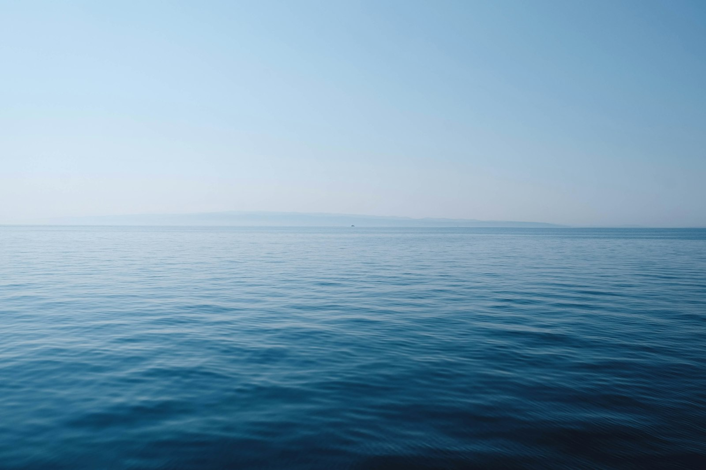
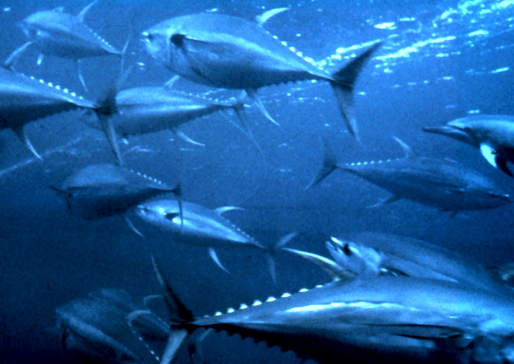

Muqdisho
Malay, carbuush, iyo shuuto ayaa ka yimaada Liido.

Xeebta Soomaaliya
Tuuna, faraq, iyo malay. Ka iibso kalluumeysato Muqdisho, Kismaayo, iyo Berbera.
SuuqaMalay, carbuush, iyo shuuto ayaa ka yimaada Liido.

Kalluun gaduud, faraq, iyo yuumbi ayaa ka yimaada dekadda.

Tuuna, garab, iyo koofiyad ayaa ka yimaada Berbera.